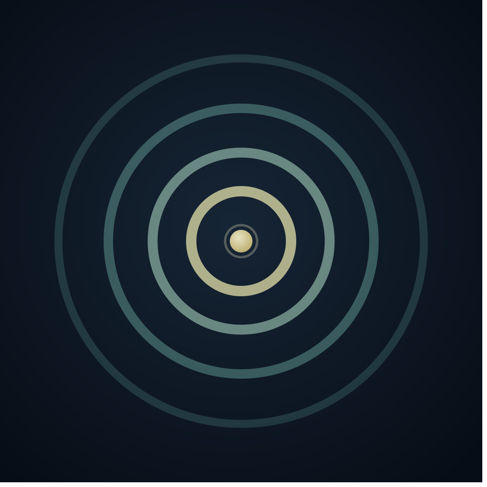

A personal iOS app for the things worth remembering. Build a library of Echoes and get a short daily list drawn from your own words.
Download on the App StoreFree for iPhone · iOS 18 or later
Three simple ideas, nothing more.
Write Echoes in your own words: things you have learned, quotes that have stayed with you, values you want to keep close. Organize them into categories and set how often each one should appear.
Each morning, Echoes selects a short list based on each Echo's frequency setting. The list stays the same all day regardless of how many times you open the app.
Tap an Echo when you've read it, thought about it, or just acknowledged it. That's the whole interaction. Tomorrow brings a fresh list.
Echoes is deliberately minimal.
Missing a day doesn't break anything. There's no score, no history, no guilt. Only today's list matters.
Yesterday's list is gone. The app doesn't track what you've done or how often. It just keeps surfacing what you told it to surface.
Every Echo is something you wrote yourself. No suggested content, no templates, no default library to edit around.
Instead of scheduling Echoes for specific times, you set how often each one should appear: Occasionally, Now and then, Every few days, Often, or Daily. The algorithm handles the rest.